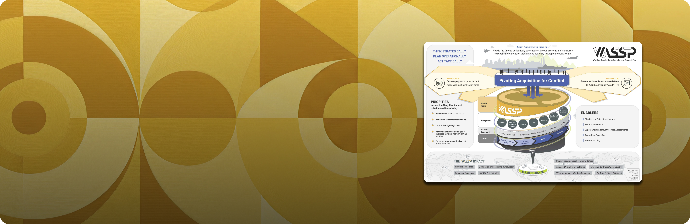
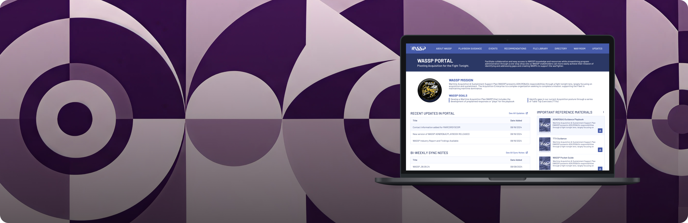
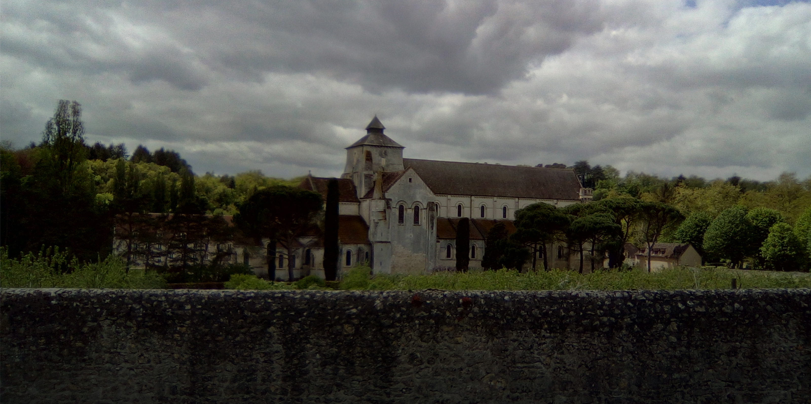

I'm a designer with roots in the social sciences—an anthropologist by training who found a natural home in UX and product strategy. I believe good work requires understanding people deeply: their contexts, motivations, and unspoken needs. My practice moves fluidly between research, design, and business thinking, seeking after what's both meaningful and well-made.
AboutRecent Work

Streamlining Defense Funding Requests
Transformed a struggling email-based funding process into a unified digital tool now used by 20+ Department of Defense agencies.

Building an immersive decision-making environment
Designed a hybrid physical-digital space used by senior Navy leadership to make mission-critical decisions.

Surfacing Insights and Recommendations for Wartime Readiness
Directed discovery and design for an MVP knowledge management platform unifying siloed information across 30+ Navy acquisition organizations.

Dwelling in Monastic Space
An Ethnography of the Benedictine Monastery